Project Detail プロジェクト詳細
NUSGDG Website Redesign
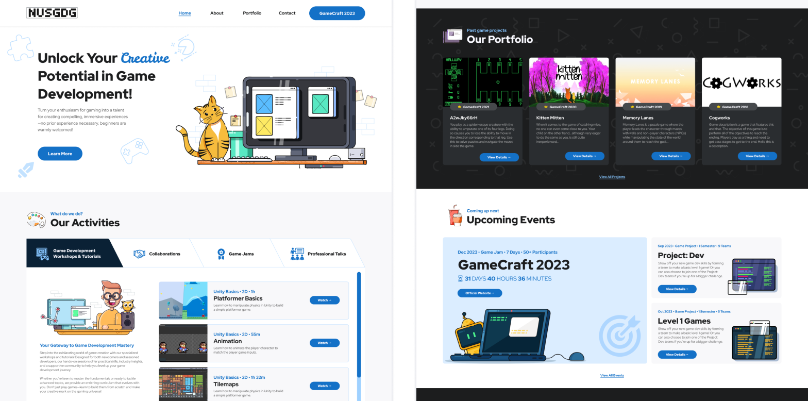
Overview 概要
How might we clearly showcase the Game Development club’s activities and learning opportunities to attract and engage new members?
I specialized in Game Development when I was in Polytechnic, which sparked my interest in joining the NUS Games Development Club when I first entered NUS.
I began researching, and one of the sources of information I used was the club’s website. However, the website was not very informative, and the entries on the page did not seem recent.
I knew that the club was for people who wanted to make games, but what events and workshops did they have? When, where, and how were they hosted? There were many unanswered questions and uncertainties, and I hesitated for a while before finally taking the leap to join the club.
This experience eventually motivated me to redesign the club’s website when I joined the exco team as a Web Developer. The goal was to smoothen the experience of information gathering for prospective members to encourage them to join the club.
Research リサーチ
I began my process by looking at what other NUS clubs and societies were doing with their websites. I did this while noting down the features I found on their main pages, along with possible reasons they were included on the website.
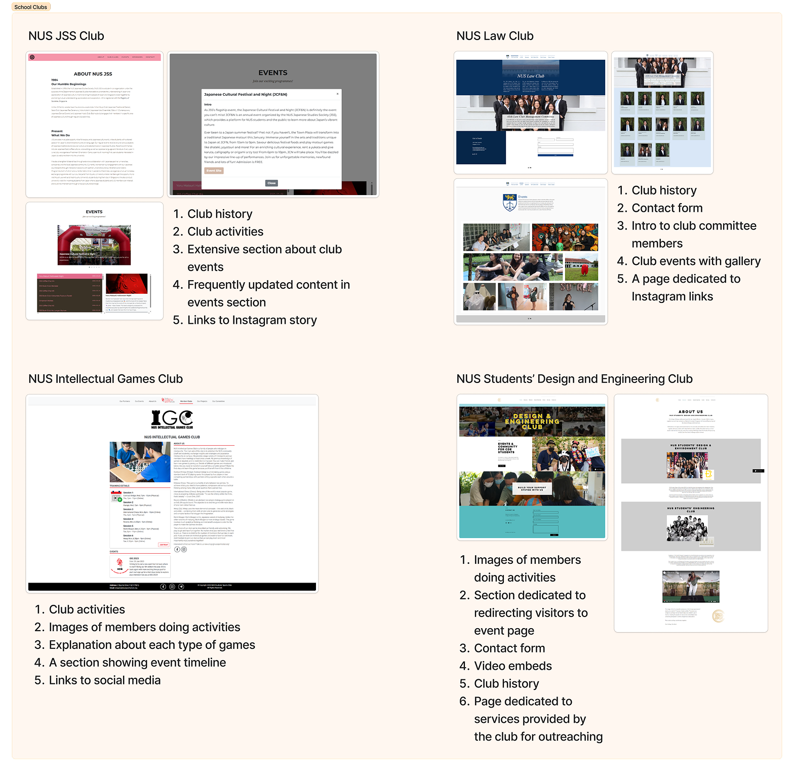
Some common features that I noticed were as follows (reasonings are in brackets):
- Club history (for building trust and authority)
- Club events & activities (for potential members to know what they can participate in)
- Linking to social media (for social media engagement)
- Images that showcase club activities & members (for building trust and give potential members a glimpse into the activities)
- Extensive explanation and timeline of key events (to inform existing and new members about upcoming events and what they are about)
Define 定義
With the common features identified from other NUS clubs’ websites as a reference, I defined a few objectives through the lens of two stakeholders that I had identified: potential members and Exco team members.
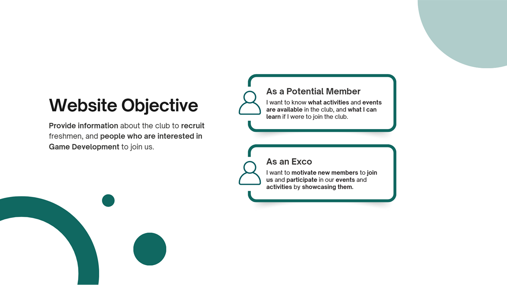
I then conducted an evaluation of the club’s website to uncover what could be improved and what was lacking, in order to better align it with the objectives.
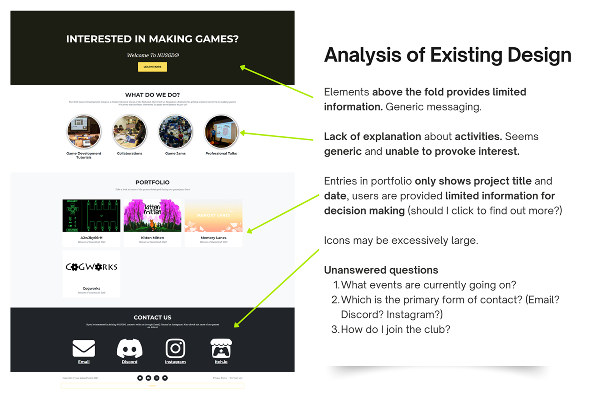
Based on the findings from the evaluation, I came up with a few redesign considerations to serve as guidelines for my designs.
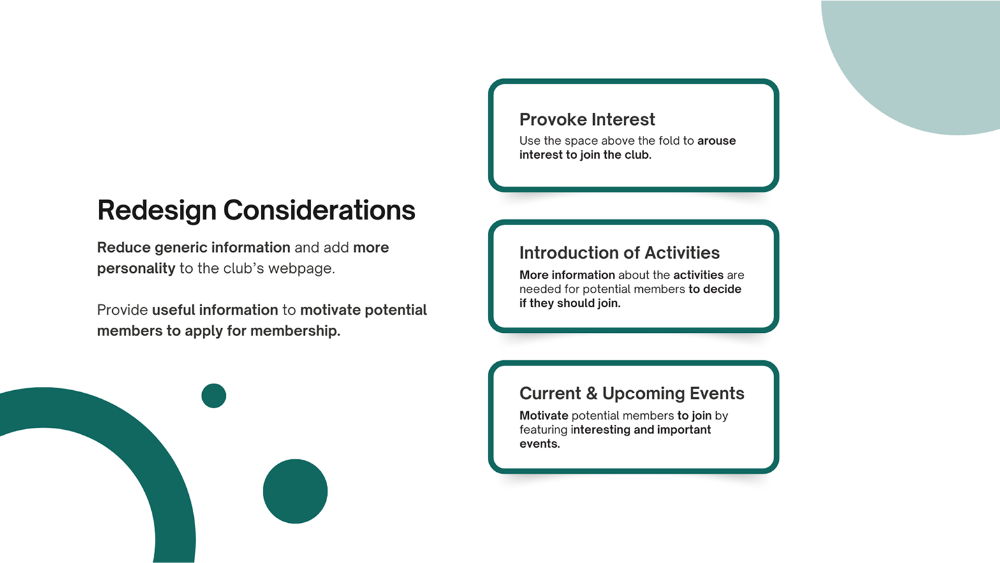
Proposed Designs デザイン案
After considering various factors—such as team size (we had a small development team that was not always available), maintenance effort, and project complexity—I decided to go with a light redesign of the club’s website, keeping the original hierarchy and only adding new sections when necessary.
The primary focus of the redesign was to enhance the visuals of the website to make it fun and engaging, as well as to add more information where applicable to entice new members to join the club by showcasing our events.
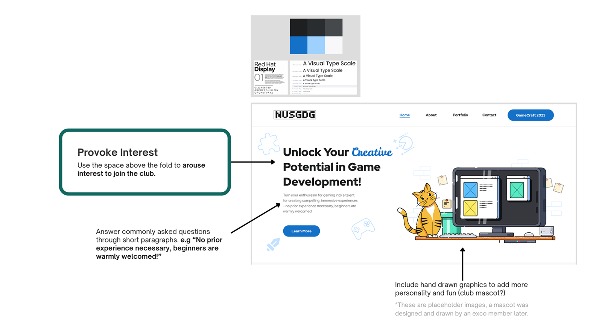
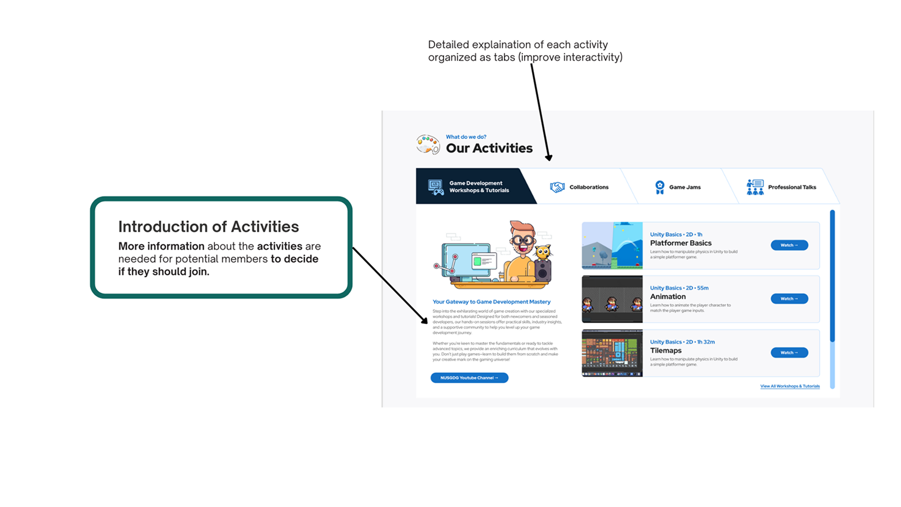
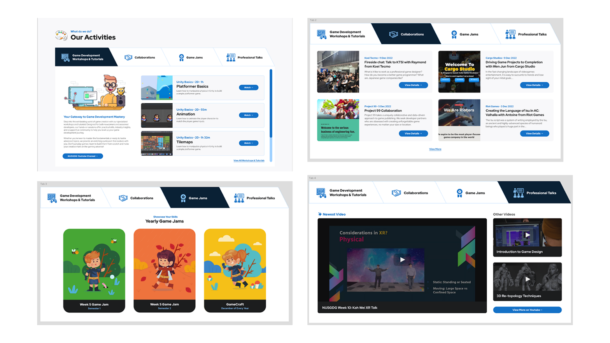
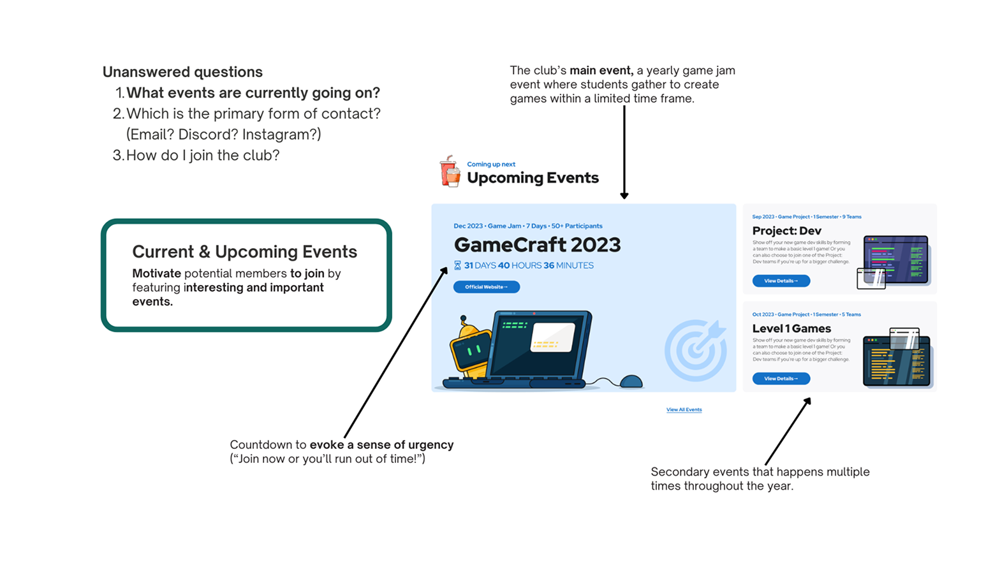
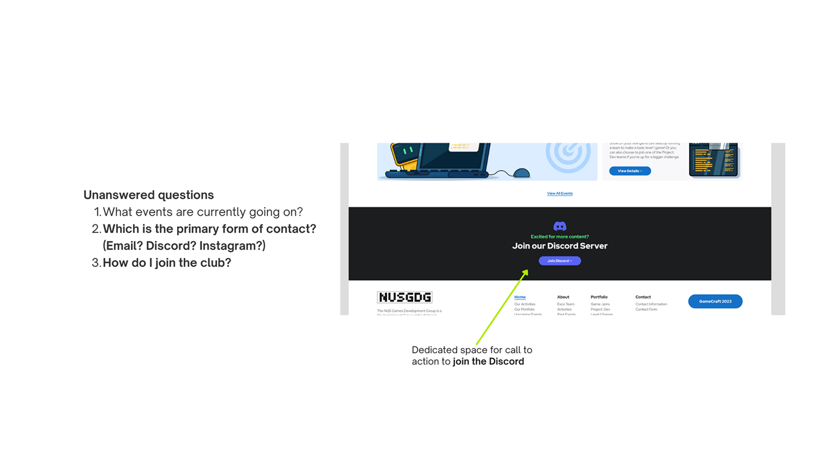
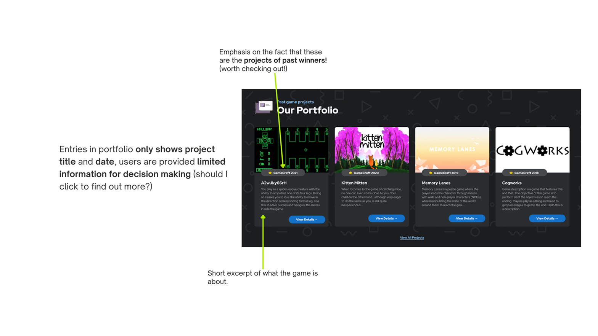
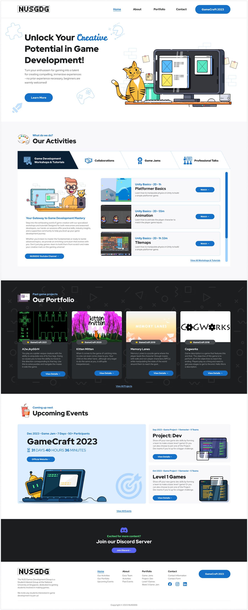
Learnings 学んだこと
This project was done in 2023, before I was exposed to the field of UX and had my first UX internship at GovTech. Looking back, there were some critical steps missing from my design process—namely, user interviews and usability testing. While it was good that I had done some degree of research (by looking at similar websites), I did not validate my assumptions with users, which is a key step in UX design.
Considering the scope of the project and the limited resources available at the time, the approach I took was relatively practical. However, if I were to revisit the project with my current understanding of UX design, I would incorporate user interviews early on to better understand the needs and pain points of potential users. I would also conduct usability testing after the redesign to ensure the changes were effective and intuitive.
Some key metrics would also have been useful for evaluation, such as the Click-Through Rate to join our club's Discord server. These steps would have provided valuable insights and helped me make more user-centered design decisions.